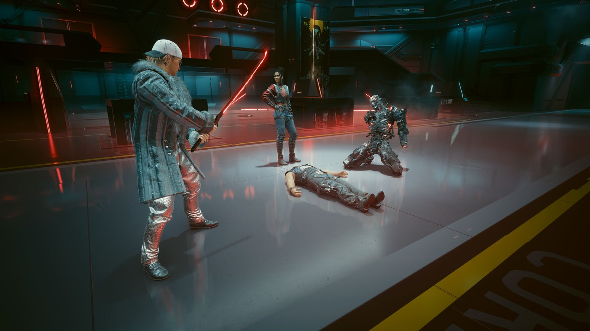
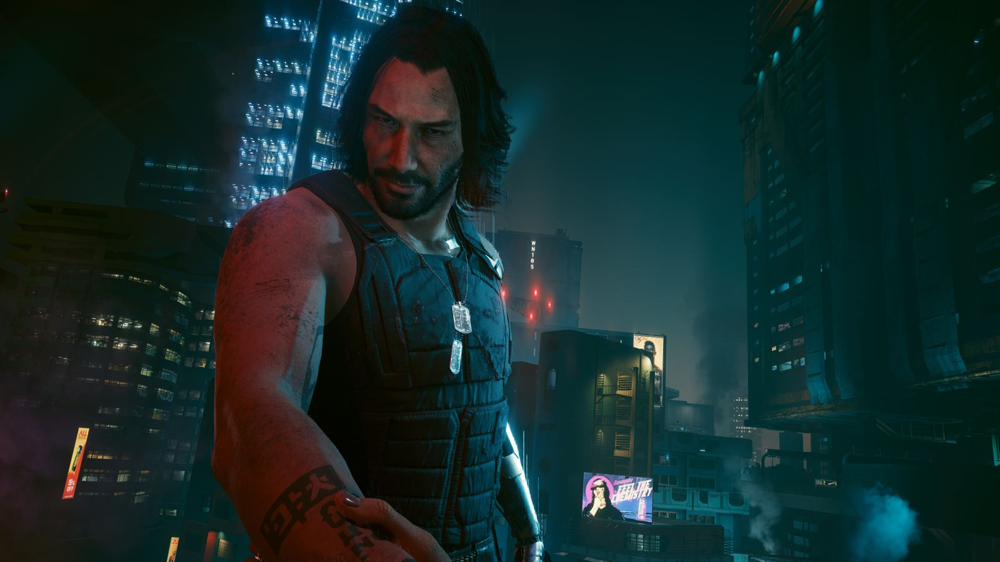
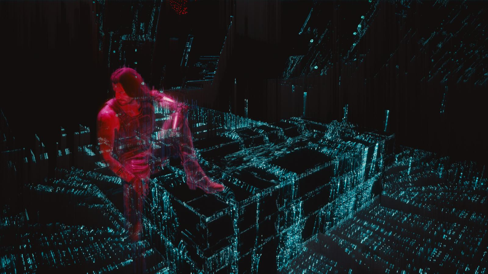

你偷走了一块芯片，芯片里有一个人
主线只有一句话可以概括：一个快死的佣兵，在寻找活下去的办法时，被迫与一个死去半个世纪的摇滚歌手共用一个身体。剩下的全部，是这句话的代价。
01三条出身，同一个结局的开头
开局让你选身份，不是选难度，而是选“你原本属于这座城市的哪一层”。三条线在半小时内汇合，但后续对话里会不断回收这些差异。
游民
在城市之外的公路上长大，跟着部族跑运输。你懂车、懂风沙、懂怎么在没有法律的地方活下去，但不懂这座城市怎么运转。
街头小子
在沃森的旧楼里长大。你认识每一个中间人，知道哪条巷子没有摄像头。这座城市对你没有秘密，也没有善意。
公司员工
在荒坂的反情报部门上班，穿着定制西装，用别人的命换自己的晋升。被踢出局那天，你才第一次看见这座城市的背面。
02第一幕：一单不该接的活
你和杰克·威尔斯是搭档。他比你更早想明白一件事：在这座城市里，想往上走只有一条路——接一单足够大的活，然后活着把它干完。
中间人德克斯特·德肖恩给了你们这单活：潜入绀碧大厦，从荒坂的房间里取出一枚叫 Relic 的生物芯片。后勤是艾芙琳·帕克和 T-Bug。一个内应、一个黑客、两个枪手，看起来是一套完整的配置。
行动本身顺利得反常。真正的转折发生在撤离：荒坂的部队封锁了大楼，杰克在车里把芯片塞给了你，然后死在你旁边。你带着一枚不该在你身上的芯片逃出去，被德克斯特一枪打在头上，扔进了垃圾场。
你活了下来。芯片也活了下来——它在你的神经接口里启动，修复了你被打穿的头骨，同时启动了一个五十多年前就被刻进去的人格。
这一幕的作用
第一幕只做一件事：把所有退路一次性关掉。你失去了搭档、失去了雇主、失去了身体的所有权，也失去了“再等等看”的可能性。
从这一刻起，V 的动机不再是“往上爬”，而是“我还有几个月”。整部游戏的时间压力就是从这里开始的。

03第二幕：脑子里的房客
强尼·银手在 2023 年参与了对荒坂塔的核袭击，被荒坂的“灵魂杀手”程序在死前扫描、数字化、关进服务器。五十多年后，他的意识体跟着这枚芯片进了你的脑子，成了唯一能和你对话的死人。
他不占据你的身体，只是一个坐在副驾驶上的声音：嘲讽你的选择、评价你的朋友、在你杀人的时候鼓掌或者骂你。游戏把这段关系做成了一条隐形的数值线——你说的话、你做的事，决定他最终把你当成“又一个公司走狗”还是“同类”。
这条线不影响你能否通关，但影响你能不能拿到那条隐藏的最终路线。它的设计意图很清楚：信任不是奖励，是你一路上每一个选择的总和。
与此同时，你在找解药。线索指向荒坂的赫尔曼医生、巫毒帮和他们的首领布丽吉特，最终指向了「黑墙」之外的阿尔特·坎宁安——强尼生前最好的黑客，也是“灵魂杀手”最初的作者。她已经不再是人类，只剩一段被五十年时间磨掉了情绪的代码。
关键人物与势力
- 强尼·银手死人，摇滚歌手，恐怖分子。住在你脑子里。
- 杰克·威尔斯你的搭档。第一幕结束时死在你旁边。
- 朱迪·阿尔瓦雷斯超梦剪辑师。她录下的东西是整部游戏最像证词的材料。
- 帕南·帕尔默阿德卡多游民。想离开这座城市的人，都先找过她。
- 竹村五郎荒坂的保镖。一个把忠诚当成唯一坐标系的人。
- 阿尔特·坎宁安黑墙之外的意识体。她已经不是她。
- 亚当·重锤荒坂的处刑人。几乎是纯机械，也是全城最贵的暴力。


04终局：六条路，都要付钱
主线最后的场景在御子。阿尔特用升级版的灵魂杀手把你和强尼分离，然后你必须决定：这具身体归谁。下面每一行都不是“好结局”或“坏结局”，而是一种代价。
| 结局 | 怎么走到 | 你付出什么 |
|---|---|---|
| 通往地狱 Path of Least Resistance |
在最后的对话里选择结束一切。 | 最短、也最安静的一条。没有战斗，没有谈判，只有一个念头：不再让任何人替你决定。 |
| 恶魔 The Devil |
选择相信荒坂华子，接受荒坂的方案。 | 理论上活下来了，但你的意识被存进御子的服务器。身体、记忆、人格都变成了企业的资产，合同比命长。 |
| 太阳 The Sun |
和罗格一起打进荒坂塔，成为夜之城的传奇。 | 你得到了想要的名声，也失去了剩下的时间。之后接受“蓝眼睛先生”的委托，去太空赌场做一单几乎不可能的活，赌一个治愈的可能。 |
| 星辰 The Star |
完成帕南的任务线，和阿德卡多一起攻打荒坂塔。 | 你放弃了对这座城市的支配，换来一群真的会替你挡枪的人。六个月的生命，但不再是独自一人。 |
| 节制 Temperance |
在桥上把身体交给强尼。 | V 的意识随阿尔特进入黑墙之外，强尼用你的身体活下来，离开夜之城，成为一个没人认识的普通人。 |
| 高塔 The Tower · 资料片新增 |
在《往日之影》中把宋昭美交给里德与新美国，换取治疗。 | 你活下来了，芯片被摘除，但义体全部失效。两年后醒来，朋友们各自散去，这座城市不再需要你——这是唯一“生理上痊愈”的结局。 |
05《往日之影》：一次没人说真话的任务
资料片的起点很功利：一个自称“百灵鸟”的黑客联系你，说她知道 Relic 的事，也有能力救你。条件是你得先帮她一个忙——新美国的总统罗莎琳德·迈尔斯的专机在狗镇上空被击落，你要把她活着带出来。
狗镇是太平洲里被切出去的一块地，由前军用科技上校库尔特·汉森和他的民兵“幽冥犬”实际统治。这里没有夜之城的霓虹，只有烂尾的混凝土、检查站和买卖。汉森不承认任何人的主权，也做任何人的生意。
接下来是一连串没有正确答案的选择。宋昭美想逃出被当成武器的命运，所罗门·里德想把她带回去，迈尔斯要的是资产不流失，汉森要的是这块地不被收走。每个人都在骗你，区别只在于你愿意相信哪一个版本的谎言。
这也是整部作品里最像间谍片的一段：你的敌人不是枪，是信息不对称。
四个人，四种立场
- 宋昭美天才黑客，新美国的秘密武器。她想做的只是不再当武器。
- 所罗门·里德潜伏特工。他把“为国效力”当成唯一的行为准则，哪怕那个国先背叛了他。
- 罗莎琳德·迈尔斯新美国总统，前军用科技高管。她需要你，也需要你之后闭嘴。
- 库尔特·汉森狗镇的统治者。不靠疯狂靠算计，是整段故事里最清醒的人。
中文译名“往日之影”与英文原名“Phantom Liberty（自由的幻影）”互为注解：过去的影子跟着你，自由则始终只是一个影子。